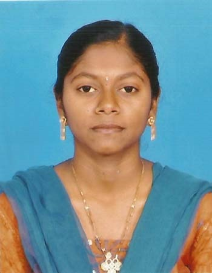

VIJAYADURGA PALANISAMY
Hai, My name is Vijayadurga.I Finished M.sc(cs).. and I'm a Web Site Developer.Welcome to my Personal Website.Thanks for Visit.
VIJAYADURGA PALANISAMY
JUNIOR WEB DEVELOPER
I'm a Front End Junior website Developer. I write about all the details about me to this website.
WHAT I DO NOW
To seeking a position in a well established
organization that offers room fro professional growth,
as this provides ample opportunities to exhibit
my skills and competencies in this field.
ACADEMIC DETAILS
Web Site Creation
Front-End: ASP.net
Description:This Project Developed based on the college or schools basic display details.
Attendance Management System
Front-End: ASP.net
Back-End: SQL SERVER
Description:This Project Developed to keep the records of college or school students personal details
also used to retrieve the students particular records based on the unique Identity Number
such as roll number.
Robust Face Alignment under Occlusion via Regional Predictive Power Estimation.
Front-End: MatLab
Description:This Project Developed to Detect the face Based the Predictive Power Estimation Algorithm.
PROGRAMMING SKILL
| Type | Language | Perfection Level |
|---|---|---|
| Application Program oriented | C,C++,Vb.net,Core Java | Intermediate |
| Web Technology Oriented | HTML,CSS,BootStrap,Java Script | Intermediate |
| Back End Oriented | SQL Server,My SQL | Intermediate |
Operating system
Windows
Certificate Course:
1.Android Workshop
2.Tally
3.Typewriting Tamil Senior Grade
3.Typewriting English Senior Grade
ACADEMIC DETAILS
E-Resume
Front-End: HTML,CSS,BOOTSTRAP,JAVA SCRIPT.
Description:This Project Developed based on the Personal and all details about me.
PERSONAL DOSSIER
Name : VIJAYADURGA.P.